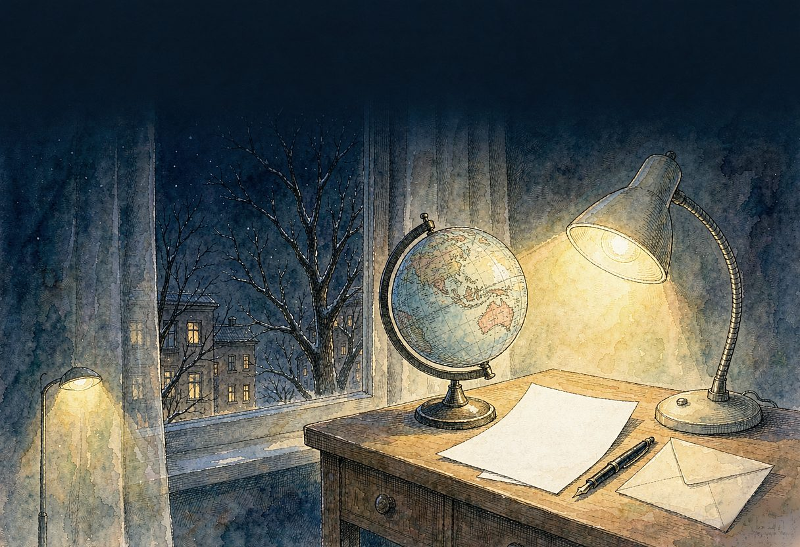

亲爱的吴优：
今天是岁末，窗外阳光很好。
你到澳洲独立生活十个月又20天。收获还真的是不少。生活关、学习关、心理关……你过得都不错。想到你的情况，我感到蛮欣慰的。
我记得你在谈到自己的感受时，曾经用过“跃跃欲试”这个词，这感觉是非常不错的，甚至是美妙的。使我想起自己在学生时代、在农场时、在市东中学、在教育学院都曾经有过这样的感觉。
在确定了一个高大的目标以后，比较周密地安排自己的时间、精力，然后一步一步地前进，真是太有劲了，同时是蛮有趣的，也是蛮享受的。
能不能留在澳洲，这是由上帝决定的。过好2010年的每一天，这才是最重要的。
我想以下几点你还是要注意的：
一、不管老的还是小的，身体都是要放在第一位的。（这是大娘娘的话）
第一尽最大的努力不要熬夜。第二再学会烹调几个自己喜欢吃的菜。第三常常散步，最好能有些运动。第四瓜果蔬菜搭配保持进出顺畅。第五久坐了起来活动，电脑前 一小时做做眼保健操。……
二、学习方面你的办法很多。我只谈谈学习方面的心态：平和一点、扎实一点、真才实学与争取分数适当兼顾，细水长流是比较重要的。
三、不断地疏导自己的心理，听一些音乐，保持良好的心境。
你身上有些优点很重要，待人相对比较真诚，不会妒忌别人；反应灵活，办事周密；性格比较外向，喜欢结交朋友，也比较善于交友。这些很不容易呀，继续发扬。
我和你妈祈求神庇佑你，身体健康、心情开朗、学业顺利、找到知己。
经济上不必太节约（比如新学期的住房，综合条件可以好一点），钱花在这种地方，也算花在刀口上的。
如果有空，多写写信当然很好，短的几句也行啊。
爸爸 2009-12-31晚八点半